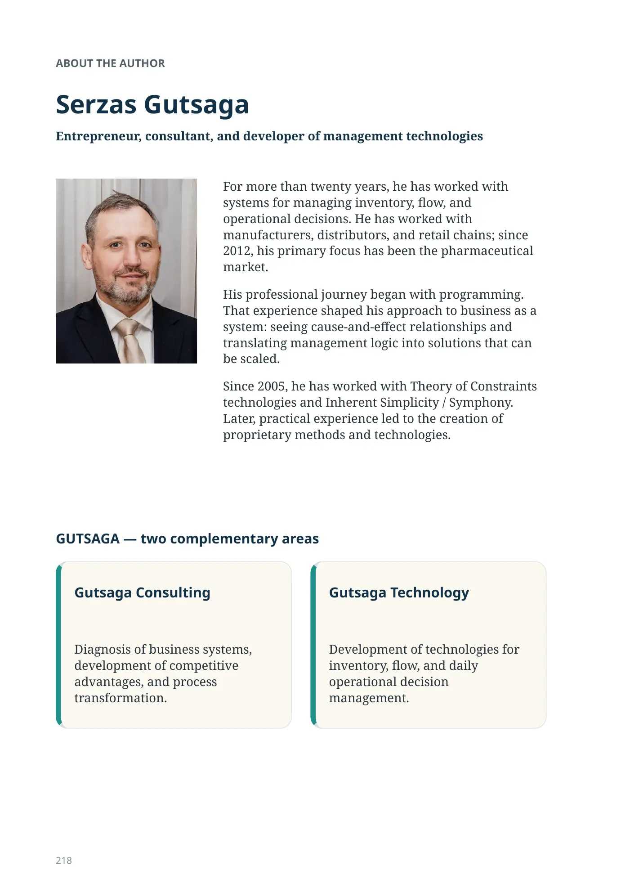
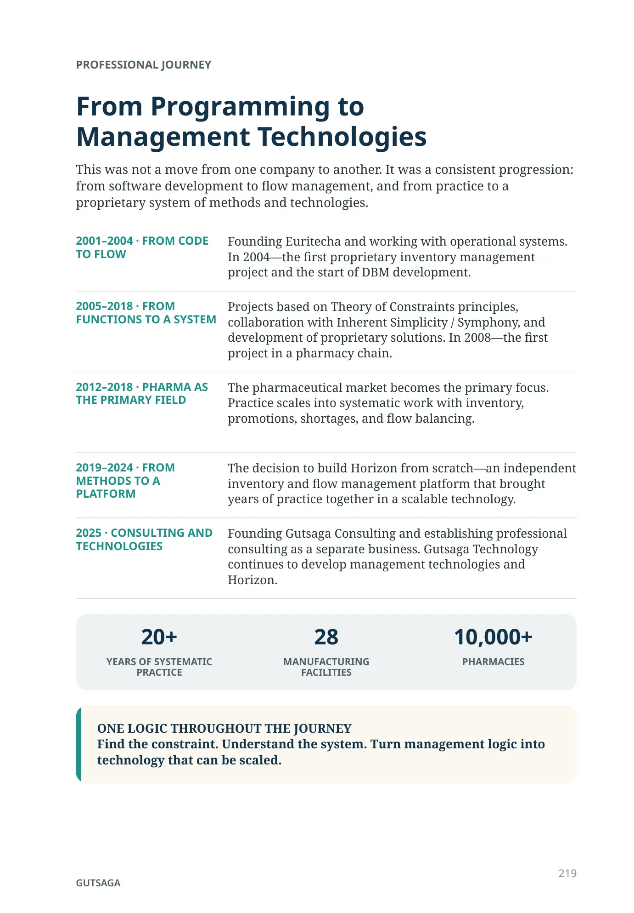

About the Author
Serzas Gutsaga
Entrepreneur, consultant, and developer of management technologies
For more than twenty years, he has worked with systems for managing inventory, flow, and operational decisions. He has worked with manufacturers, distributors, and retail chains; since 2012, his primary focus has been the pharmaceutical market.
His professional journey began with programming. That experience shaped his approach to business as a system: seeing cause-and-effect relationships and translating management logic into solutions that can be scaled.
Since 2005, he has worked with Theory of Constraints technologies and Inherent Simplicity / Symphony. Later, practical experience led to the creation of proprietary methods and technologies.
GUTSAGA — two complementary areas
Gutsaga Consulting
Diagnosis of business systems, development of competitive advantages, and process transformation.
Gutsaga Technology
Development of technologies for inventory, flow, and daily operational decision management.
Professional Journey
From Programming to Management Technologies
This was not a move from one company to another. It was a consistent progression: from software development to flow management, and from practice to a proprietary system of methods and technologies.
- 2001–2004 · FROM CODE TO FLOW
- Founding Euritecha and working with operational systems. In 2004—the first proprietary inventory management project and the start of DBM development.
- 2005–2018 · FROM FUNCTIONS TO A SYSTEM
- Projects based on Theory of Constraints principles, collaboration with Inherent Simplicity / Symphony, and development of proprietary solutions. In 2008—the first project in a pharmacy chain.
- 2012–2018 · PHARMA AS THE PRIMARY FIELD
- The pharmaceutical market becomes the primary focus. Practice scales into systematic work with inventory, promotions, shortages, and flow balancing.
- 2019–2024 · FROM METHODS TO A PLATFORM
- The decision to build Horizon from scratch—an independent inventory and flow management platform that brought years of practice together in a scalable technology.
- 2025 · CONSULTING AND TECHNOLOGIES
- Founding Gutsaga Consulting and establishing professional consulting as a separate business. Gutsaga Technology continues to develop management technologies and Horizon.
20+ YEARS OF SYSTEMATIC PRACTICE
28 MANUFACTURING FACILITIES
10,000+ PHARMACIES
GUTSAGA
219